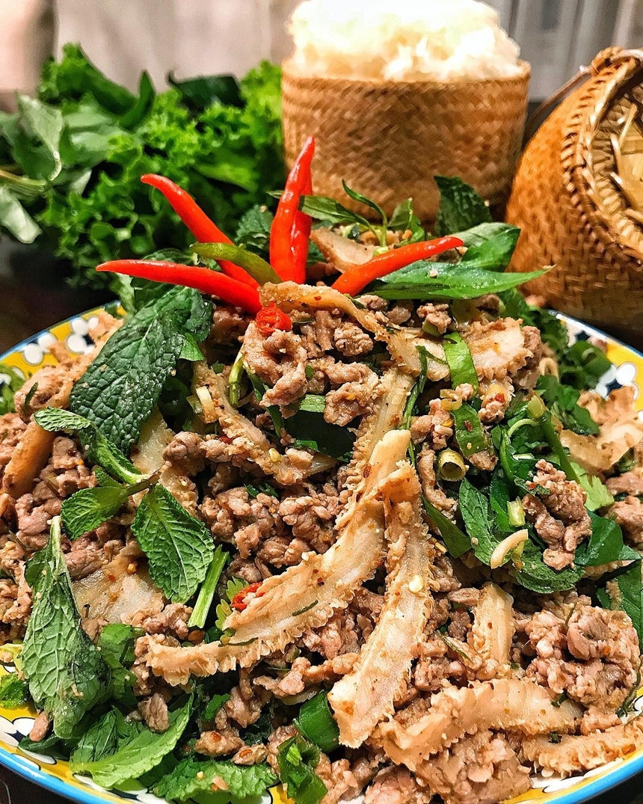
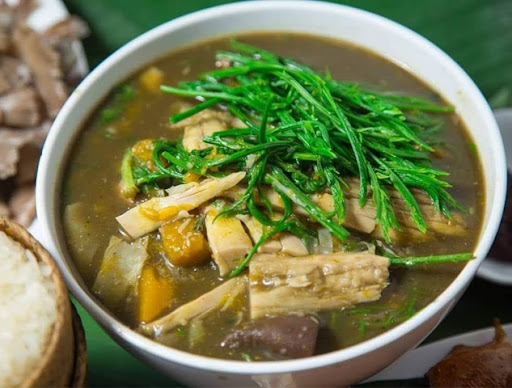
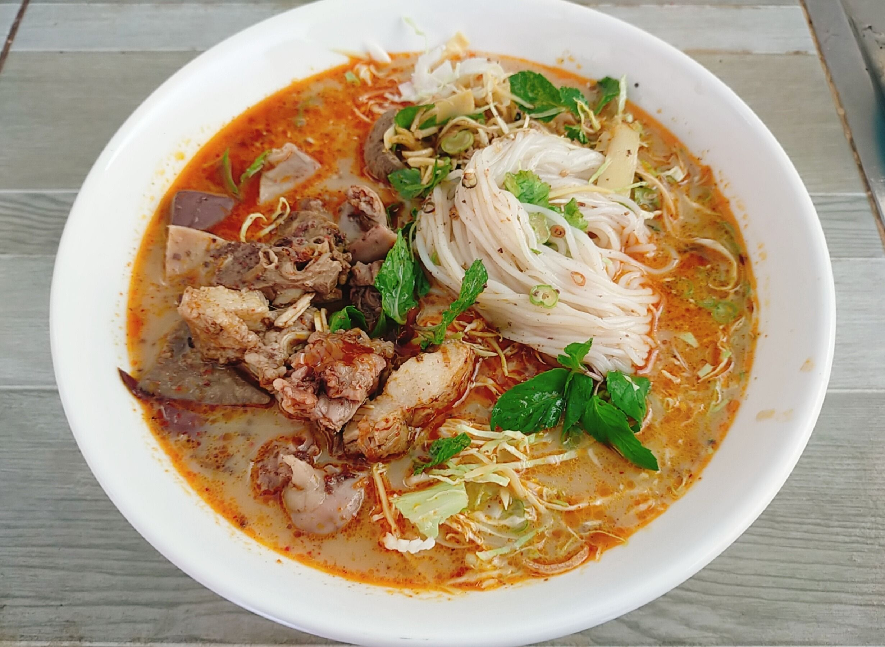
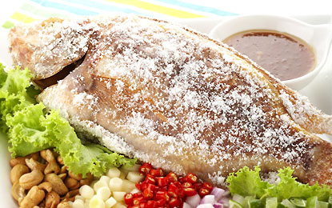

ອາຫານລາວຍອດນິຍົມ

ລາບ
ລາບແມ່ນອາຫານລາວທີ່ມີຊື່ສຽງທີ່ສຸດ, ເຮັດຈາກຊີ້ນສັດປຸງແຕ່ງດ້ວຍສະໝຸນໄພ, ໝາກນາວ, ແລະ ເຄື່ອງປຸງລົດຊາດອື່ນໆ.
ຕຳໝາກຫຸ່ງ
ຕຳໝາກຫຸ່ງແມ່ນອາຫານລາວທີ່ເຮັດຈາກໝາກຫຸ່ງດິບ, ໝາກເຜັດ, ໝາກນາວ, ນ້ຳປາ, ແລະ ເຄື່ອງປຸງອື່ນໆ.

ແກງໜໍ່ໄມ້
ແກງໜໍ່ໄມ້ແມ່ນອາຫານລາວທີ່ເຮັດຈາກໜໍ່ໄມ້, ຊີ້ນ, ແລະ ເຄື່ອງປຸງຕ່າງໆ, ມີລົດຊາດເຜັດແລະຫອມຫວານ.

ເຂົ້າປຸ້ນ
ເຂົ້າປຸ້ນແມ່ນອາຫານລາວທີ່ເຮັດຈາກເສັ້ນເຂົ້າປຸ້ນ, ກິນກັບນ້ຳແຈ່ວ, ຜັກສົດ, ແລະ ຊີ້ນ.

ປິ້ງປາ
ປິ້ງປາແມ່ນອາຫານລາວທີ່ເຮັດຈາກປາປິ້ງເທິງຖ່ານ, ປຸງແຕ່ງດ້ວຍເກືອ, ຫົວຜັກບົ່ວ, ແລະ ສະໝຸນໄພ.

ແຈ່ວບອງ
ແຈ່ວບອງແມ່ນນ້ຳພິກລາວທີ່ເຮັດຈາກໝາກເຜັດແຫ້ງ, ກະທຽມ, ໝາກເຂືອ, ແລະ ເຄື່ອງປຸງອື່ນໆ.
ສູດອາຫານລາວ
ສູດເຮັດລາບຊີ້ນງົວ
ເວລາກະກຽມ: 20 ນາທີ
ເວລາແຕ່ງກິນ: 10 ນາທີ
ຈຳນວນຄົນກິນ: 4 ຄົນ
ສ່ວນປະກອບ:
- ຊີ້ນງົວ 500 ກຣາມ
- ຫົວຜັກບົ່ວແດງ 2 ຫົວ
- ຫົວຜັກທຽມ 4 ກີບ
- ໃບຜັກຊີ 1/4 ຖ້ວຍ
- ໃບຜັກຫອມປ້ອມ 1/4 ຖ້ວຍ
- ໝາກນາວ 2 ໜ່ວຍ
- ເຂົ້າຄົ່ວບົດ 2 ບ່ວງແກງ
- ພິກປ່ນ 1 ບ່ວງແກງ
- ນ້ຳປາ 2 ບ່ວງແກງ
- ເກືອ 1/2 ບ່ວງກາເຟ
ວິທີເຮັດ:
- ຊີ້ນງົວຕັດເປັນຕ່ອນນ້ອຍໆ ແລ້ວຕົ້ມໃຫ້ສຸກ.
- ຫຼັງຈາກຊີ້ນສຸກແລ້ວ, ຕັດເປັນຕ່ອນນ້ອຍໆ.
- ຕຳຫົວຜັກບົ່ວແດງ ແລະ ຫົວຜັກທຽມໃຫ້ລະອຽດ.
- ຕັດໃບຜັກຊີ ແລະ ໃບຜັກຫອມປ້ອມເປັນຕ່ອນນ້ອຍໆ.
- ໃສ່ຊີ້ນງົວ, ຫົວຜັກບົ່ວແດງ, ຫົວຜັກທຽມ, ໃບຜັກຊີ, ໃບຜັກຫອມປ້ອມ, ເຂົ້າຄົ່ວບົດ, ພິກປ່ນ, ນ້ຳປາ, ແລະ ເກືອໃນຊາມ.
- ບີບນ້ຳໝາກນາວໃສ່ ແລ້ວຄົນໃຫ້ເຂົ້າກັນ.
- ຊີມລົດຊາດ ແລະ ປັບຕາມຄວາມຕ້ອງການ.
- ຕົບແຕ່ງດ້ວຍໃບຜັກຊີ ແລະ ໃບຜັກຫອມປ້ອມ.
ສູດເຮັດຕຳໝາກຫຸ່ງ
ເວລາກະກຽມ: 15 ນາທີ
ເວລາແຕ່ງກິນ: 5 ນາທີ
ຈຳນວນຄົນກິນ: 2 ຄົນ
ສ່ວນປະກອບ:
- ໝາກຫຸ່ງດິບ 1 ໜ່ວຍ
- ໝາກເຜັດ 3-5 ໜ່ວຍ
- ກະທຽມ 3 ກີບ
- ໝາກນາວ 2 ໜ່ວຍ
- ໝາກເລັ່ນ 2 ໜ່ວຍ
- ນ້ຳປາ 2 ບ່ວງແກງ
- ນ້ຳຕານ 1 ບ່ວງແກງ
- ເກືອ 1/2 ບ່ວງກາເຟ
- ໝາກຖົ່ວດິນ 2 ບ່ວງແກງ
ວິທີເຮັດ:
- ປອກເປືອກໝາກຫຸ່ງ ແລ້ວຂູດເປັນເສັ້ນຍາວໆ.
- ຕຳໝາກເຜັດ ແລະ ກະທຽມໃນຄົກໃຫ້ແຕກ.
- ໃສ່ໝາກຫຸ່ງທີ່ຂູດແລ້ວລົງໃນຄົກ.
- ໃສ່ນ້ຳປາ, ນ້ຳຕານ, ແລະ ເກືອ.
- ຕຳໃຫ້ເຂົ້າກັນ.
- ບີບນ້ຳໝາກນາວໃສ່ ແລະ ຕຳອີກເທື່ອໜຶ່ງ.
- ໃສ່ໝາກເລັ່ນຕັດເປັນຕ່ອນນ້ອຍໆ ແລະ ໝາກຖົ່ວດິນ.
- ຕຳໃຫ້ເຂົ້າກັນອີກເທື່ອໜຶ່ງ.
- ຊີມລົດຊາດ ແລະ ປັບຕາມຄວາມຕ້ອງການ.